Chemical Bonding 1
Topic 2 · Chemical Bonding Part 1
On this page
- Introduction
- Bonding and the periodic table
- Electronegativity
- Chemical bonding – more rules
- Ionic bonding
- Metallic bonding
- Covalent bonding
- Dative covalent (co-ordinate) bonding
- Covalent bonds and orbital overlap: σ and π bonds
- Intermediate types of bonding and bond polarity
- Bond energy and bond length
- Bond energy, bond polarity and reactivity
Introduction
When it comes to bonding, it is essential to imagine the electrostatic forces involved. Energy is also a useful concept, but on its own it does not always lead to such a clear picture of the way things are. It is electrostatic attraction which holds atoms and ions together, not energy. However, complex energy calculations provide essential information (for example the shapes of atomic and molecular orbitals). We do not need to examine the calculations in detail, but we do need to include in our models the information they provide.
This note covers the three types of strong bonding (ionic, metallic and covalent, including dative covalent bonds), how covalent bonds form from overlapping orbitals, bond polarity, and bond energy and bond length. Part 2 deals with the shapes and polarity of molecules; Part 3 with the forces between molecules, lattice structures and physical properties.
Bonding and the periodic table
There are few facts at this level which must simply be learned. However, it is best that you can instantly picture the place in the periodic table of any element mentioned in your syllabus. If you have these positions stamped on your mind as the starting point for all your inorganic theory, there will be far fewer other facts that you simply need to remember.
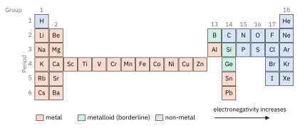
Patterns down a group: changes down a group follow from the increasing number of electron shells. The outer electrons are further from (and more shielded from) the nucleus. These changes are abbreviated as being due to increasing size.
Patterns across a period: changes across a period follow from the increasing number of protons in the nucleus, which have to hold only the same number of shells in place. These changes are summarised as being due to increasing effective nuclear charge.
Electronegativity
The type of bonding between two elements can be conveniently predicted from their relative electronegativities.
We also use the word electropositivity for the opposite tendency: the ability of an atom to lose electrons and form positive ions. An electropositive element (a reactive metal) is simply one with a very low electronegativity. Electronegativity follows group and period trends.1
Electronegativity down a group: down a group, the bonding electrons are further from the nucleus (and more shielded from it). They are less strongly attracted by the nucleus, so the elements become less electronegative (and more electropositive).
Electronegativity across a period: across a period, the increasing effective nuclear charge, with the atoms becoming smaller, means that the bonding electrons are more strongly attracted. The elements become less electropositive and more electronegative.
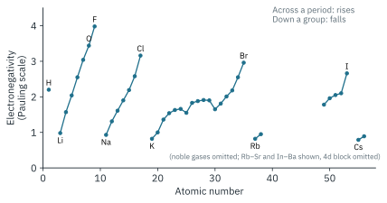
Fluorine, oxygen, nitrogen and chlorine, at the top right of the table, are the most electronegative elements. The Group 1 metals at the bottom left are the least.
Chemical bonding – more rules
At the start of the topic, it was mentioned that a chemical bond always involves the electrostatic attraction of positive and negative. Furthering that, the type of chemical bonding present is determined by where this electrostatic attraction occurs: between oppositely charged ions (ionic), between positive ions and delocalised electrons (metallic), or between two nuclei and a shared pair of electrons (covalent).
By combining our understanding of the periodic table and of electronegativity, we can predict the type of bonding between pairs of elements. Consider the pair of electrons that A and B could share:
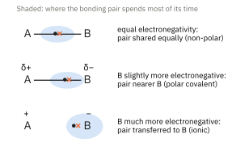
If the atoms are equally electronegative, both have the same tendency to attract the bonding pair, and so it will be found on average half way between the two atoms. If B is slightly more electronegative, the pair is pulled nearer to B: B gains a small negative charge (δ−) and A a small positive charge (δ+). This is a polar bond, a covalent bond in which there is a separation of charge between one end and the other. If B is much more electronegative, B takes control of the pair completely: the result is ions, and an ionic bond.
Ionic bonding
Bonding between elements widely separated in the periodic table. Elements towards the left of the table and towards the bottom are the least electronegative (the most electropositive). They are the most likely to lose electrons and form positive ions (metals). Conversely, those towards the top right-hand corner are the most electronegative, and the most likely to form negative ions (non-metals).
When these opposite types of element, which differ widely in electronegativity, react, one atom completely loses control of its outer electrons to the other. Electrons are transferred from the metal atom to the non-metal atom, and the ions formed are held together by an ionic (electrovalent) bond.
Note that we cannot define a single ionic bond in a lattice, because each ion is attracted to all the surrounding oppositely charged ions. In sodium chloride, each Na+ ion is surrounded by 6 Cl− ions and each Cl− ion by 6 Na+ ions (Part 3, Fig 8).
Dot-and-cross diagrams for ionic compounds
In a dot-and-cross diagram, the electrons from one atom are drawn as dots and those from the other as crosses, so that you can see where each electron came from. For ionic compounds, draw each ion separately in square brackets, show its charge, and normally show only the outer shell.
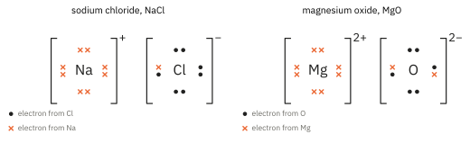
Sodium (2.8.1) loses one electron to chlorine (2.8.7), giving Na+ (2.8) and Cl− (2.8.8). Magnesium (2.8.2) transfers two electrons to oxygen (2.6), giving Mg2+ and O2−. The higher charges on Mg2+ and O2− (and their smaller size) give a much stronger attraction between the ions, which is why MgO melts at 2852 °C and NaCl at 801 °C.
Metallic bonding
For ionic bonding, an electropositive element is paired with an electronegative one, and one atom completely loses control of the electron pair to the other. In covalent bonding, the pairing of two electronegative elements, both atoms want control of the electron pair.
When electropositive atoms (metals) bond to each other, neither is able to maintain control over the bonding electrons. The outer electrons of each atom are released into a cloud of electron density that spreads over the whole lattice of positive ions. These electrons are delocalised: they do not belong to any one atom. Metallic bonding occurs between atoms of the same element as well as in alloys, between atoms of different metals.
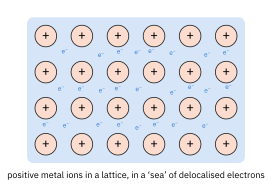
The strength of metallic bonding increases with the number of delocalised electrons each atom contributes and with the charge density of the positive ions (higher charge, smaller ion). From sodium to aluminium, each atom contributes 1, 2 and then 3 electrons and the ions become smaller and more highly charged, so the metallic bonding becomes stronger (melting points: Na 98 °C, Mg 650 °C, Al 660 °C; boiling points: Na 883 °C, Mg 1090 °C, Al 2519 °C). (Note that this is not the same as saying the bonding becomes more metallic.)
Covalent bonding
Bonding between elements close in the periodic table. When two atoms are both in the more electronegative part of the periodic table (non-metals), they have similar or the same electronegativity. Neither is able to take complete control of the electron pair from the other, as in the case of an ionic bond.
Since both atoms want control of the electron pair, the bonding electrons are held in a well-defined space (called an orbital) between the two bonding atoms. The precise definition of a covalent bond may surprise you, because at this stage it is important to emphasise that all bonds are electrostatic. Too often, covalent bonds are made to sound like diplomatic pacts based on an agreement between two atoms to share a pair of electrons.
One shared pair of electrons makes a single bond. Two shared pairs make a double bond (O=O, C=C, C=O) and three make a triple bond (N≡N).
Dot-and-cross diagrams for covalent molecules
- Show only the outer-shell electrons, and use dots for one atom and crosses for the other.
- Place each shared pair between the two atoms it bonds. Show every lone pair (a pair not used in bonding).
- Check the count: each atom keeps all its own outer electrons, and (usually) ends up with 8 in its outer shell. Hydrogen ends up with 2.
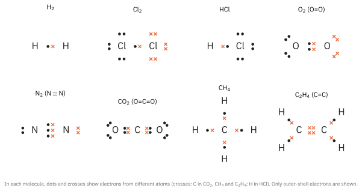
Some atoms do not end up with 8. In BF3, boron has only 6 outer electrons (it is electron-deficient; see Al2Cl6 below). Atoms from Period 3 onwards can have more than 8 outer electrons, as in PCl5 (10) and SF6 (12), because they have more outer orbitals available.2
Dative covalent (co-ordinate) bonding
For a dative bond to form, one atom must have a lone pair to donate and the other must have an empty orbital to accept it. A dative bond is shown in a displayed formula by an arrow from the donor atom to the acceptor atom. Once formed, it is no different from any other covalent bond.
Ammonium ion. The lone pair on the nitrogen of NH3 is donated to an H+ ion, which has an empty 1s orbital:
NH3 + H+ → NH4+
All four N–H bonds in NH4+ are then identical; you cannot tell which one was the dative bond.
Aluminium chloride. In AlCl3, aluminium has only 6 outer electrons. In the vapour, at temperatures not far above its sublimation point, two AlCl3 units join as Al2Cl6: a lone pair on a chlorine atom of each unit is donated to the aluminium atom of the other unit. Each aluminium then has 8 outer electrons.
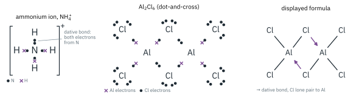
Another example is the reaction of BF3 (electron-deficient boron) with NH3, forming F3B←NH3. You will meet this again in Topic 4, where a lone-pair donor is a Lewis base and a lone-pair acceptor is a Lewis acid.
Covalent bonds and orbital overlap: σ and π bonds
A covalent bond forms when an orbital on one atom overlaps with an orbital on the other, and the shared pair occupies the region of overlap. How the orbitals overlap gives two kinds of covalent bond.
- A σ (sigma) bond is formed by the head-on (end-on) overlap of two orbitals along the line joining the two nuclei (the internuclear axis). The electron density is concentrated on the axis between the nuclei. s–s (H2), s–p (HCl) and p–p (Cl2) overlaps all give σ bonds.
- A π (pi) bond is formed by the side-on (sideways) overlap of two p orbitals that are parallel to each other. The electron density is concentrated in two regions, above and below the internuclear axis. A π bond can only form in addition to a σ bond.
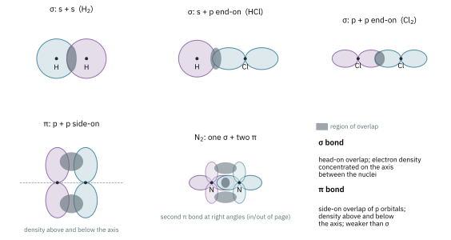
| Bond | Made up of | Examples |
|---|---|---|
| Single | 1 σ bond | H–H, H–Cl, Cl–Cl, C–H |
| Double | 1 σ bond + 1 π bond | O=O, C=C in C2H4, C=O in CO2 |
| Triple | 1 σ bond + 2 π bonds (at right angles to each other) | N≡N |
A π bond is weaker than a σ bond, because side-on overlap of p orbitals is less effective than head-on overlap. You can see this in the Data Booklet: C=C (610 kJ mol−1) is less than twice C–C (2 × 350 = 700 kJ mol−1). The π electrons are also more exposed, above and below the plane of the molecule, which is why alkenes react with electrophiles (Topic 11.4).3
Intermediate types of bonding and bond polarity
The two main types of bonding, ionic and covalent, are extreme cases. Only a bond between two identical atoms in identical environments (as in Cl2) is completely non-polar, and no compound is 100 % ionic. Chemical bonding is more often than not an intermediate between the two types.
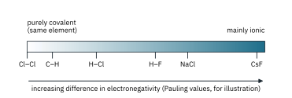
Ionic vs covalent. There is an initial problem here of deciding whether to treat the bonding as ionic with covalent character, or covalent with ionic character. This must be judged from an overall assessment of properties. For example, any compound which conducts electricity when molten is more likely to be judged as principally ionic than as principally covalent.
Covalent bonding with ionic character: polar bonds
When a covalent bond forms between elements of differing electronegativity, the electron pair is not shared equally. The difference is not large enough for the electron to be transferred completely, so the bond does not become ionic.
The more electronegative element has a greater share of the bonding pair, and gains a partial negative charge, δ−. The other atom is left with a partial positive charge, δ+. For example, in hydrogen chloride:
δ+H–Clδ−
This separation of charge sets up a permanent dipole across the bond. Whether the molecule as a whole is polar depends on its shape as well (Part 2).4
Ionic bonding with covalent character: polarisation (Enrichment)
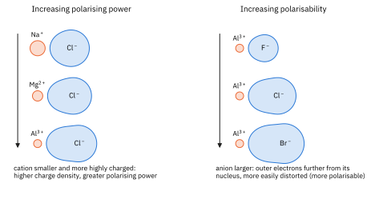
Bond energy and bond length
Bond breaking is always endothermic, so bond energies are positive. (Bond energies are used to estimate enthalpy changes in Topic 7.)
A covalent bond is the attraction of two nuclei for the shared pair. The closer the shared pair is to the two nuclei, the stronger the attraction. So, in general, the shorter the bond, the stronger it is:
- Larger atoms form longer, weaker bonds. Down Group 17, the halogen atom gets bigger, the bonding pair is further from the halogen nucleus, and both H–X and C–X bonds get longer and weaker (Fig 11).
- Multiple bonds are shorter and stronger than single bonds between the same atoms, because more electrons are shared between the two nuclei.
| Bond | Bond length / nm | Bond energy / kJ mol−1 |
|---|---|---|
| C–C | 0.154 | 350 |
| C=C | 0.134 | 610 |
| C≡C | 0.120 | 840 |
| H–Cl | 0.127 | 431 |
| H–Br | 0.141 | 366 |
| H–I | 0.161 | 299 |
Bond energies are from the Data Booklet; bond lengths are typical values.
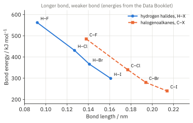
Bond energy, bond polarity and reactivity
To react, a molecule usually has to break (or start to break) a bond. Two properties of a covalent bond decide how easily that happens.
- Bond energy. The weaker the bond, the more easily it breaks, and the more reactive the compound.
- Bond polarity. A polar bond has a δ+ end that attracts electron-rich species (nucleophiles) and a δ− end that attracts electron-poor species (electrophiles). A non-polar bond is not attacked in this way.
Examples
- Nitrogen is very unreactive. N≡N (944 kJ mol−1) is one of the strongest bonds known, and it is non-polar. Compare O=O (496 kJ mol−1): oxygen is far more reactive.
- Thermal stability of the hydrogen halides decreases down the group. HI decomposes into H2 and I2 when a hot wire is plunged into it; HCl does not. H–I (299 kJ mol−1) is much weaker than H–Cl (431 kJ mol−1).
- Halogenoalkanes (Topic 11.5). C–Cl is more polar than C–I, so you might expect chloroalkanes to be attacked faster by nucleophiles such as OH−. In fact the order of reactivity is R–I > R–Br > R–Cl > R–F. Bond energy wins: C–I (240 kJ mol−1) breaks far more easily than C–Cl (340 kJ mol−1), and C–F (485 kJ mol−1) hardly reacts at all.
- Polar bonds decide where a reagent attacks. In a carbonyl group, Cδ+=Oδ−, nucleophiles attack the δ+ carbon (Topic 11.7). The non-polar C=C bond of an alkene is attacked instead by electrophiles, attracted by its exposed π electrons (Topic 11.4).
Additional information
- The most widely used values are Pauling electronegativities, from 0.7 (Fr) to 4.0 (F). They are used in the figures here for illustration only: 9476 does not require quantitative treatment of electronegativity. ↩
- Beyond the syllabus: this is often described as using d orbitals, but the modern view is more subtle. For this syllabus, simply accept that Period 3 atoms can have more than 8 outer electrons. ↩
- The older version of this note explained the bonding in CH4, C2H4, C2H2 and benzene using hybridisation (sp3, sp2, sp). 9476 places hybridisation in Topic 11.1, so that material has moved to the Introduction to Organic Chemistry note. ↩
- The ionisation of HCl in water to give H+(aq) and Cl−(aq) is sometimes quoted as evidence that H–Cl is partly ionic. It is not: that is an acid–base reaction with water (Topic 4). The evidence for the polarity of H–Cl is its permanent dipole. ↩